◉
Audio-reactive 3D geometry
Cylinder and sphere rotate in real time, each tuned to fill the frame. Beat-driven shake on X/Y, with four ribbons that collapse to bass, mid, treble and overall level.
Native Android · up to 120 Hz · OpenGL ES 3.0
Real-time audio visualizer · kaleidoscope mandalas · hardware MP4 up to 4K.
abstrakt engine wraps 3D geometry in audio-reactive textures, folds them into kaleidoscope mandalas, and captures the result as an H.264 MP4 with your audio already muxed in — entirely on your device.
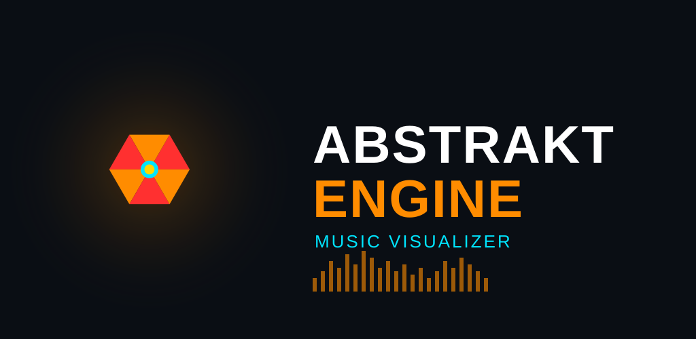
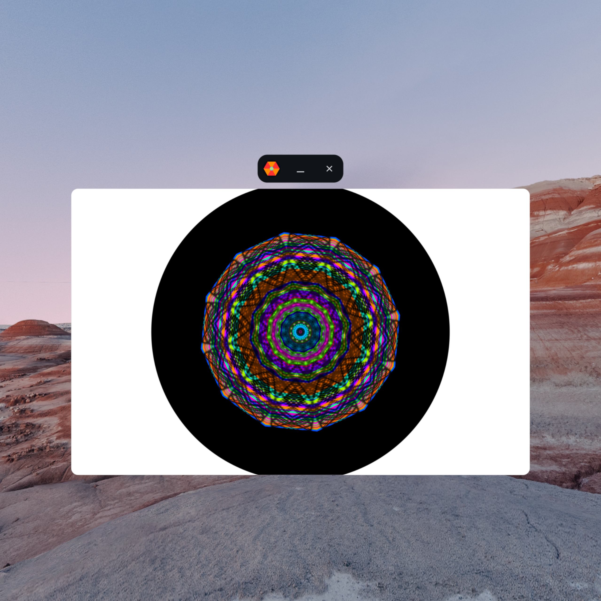
Pick an audio file or tap the mic, choose a skin, and watch a rotating 3D shape painted with shader color or your own photo — folded into a radially symmetric mandala that pulses on every beat.
Cylinder and sphere rotate in real time, each tuned to fill the frame. Beat-driven shake on X/Y, with four ribbons that collapse to bass, mid, treble and overall level.
A 4096×256 texture painted stripe-by-stripe every revolution — hue stripe, audio paint, print head, or a photo you supply.
Fold 2–24 ways (Mirror, Hex, Star…), lock 4-fold Diamond/Square symmetry, choose from eight SDF frame shapes, and tune beat sensitivity live.
Tap the mic to drive the visuals from the room around you instead of a file — playback pauses and resumes automatically.
Capture a mosaic from any moment, preview the 8×8 grid, keep it — now it's a reusable audio-reactive skin. 5 built-in plus up to 10 of your own.
Runs entirely on-device. No accounts, no sign-in — your audio, photos, skins and exports never leave your phone.
Tap ↓ → Export Wizard. abstrakt engine renders offline at the live framerate, then muxes your audio track. On a Galaxy S25, 4K runs at 4–5× real-time.
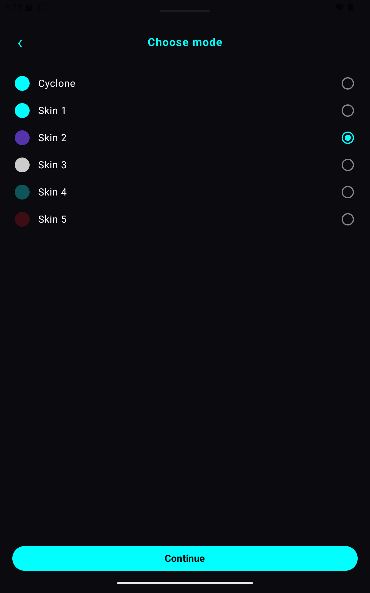
Pick the visual — Cyclone, or any of your built-in and custom skins.
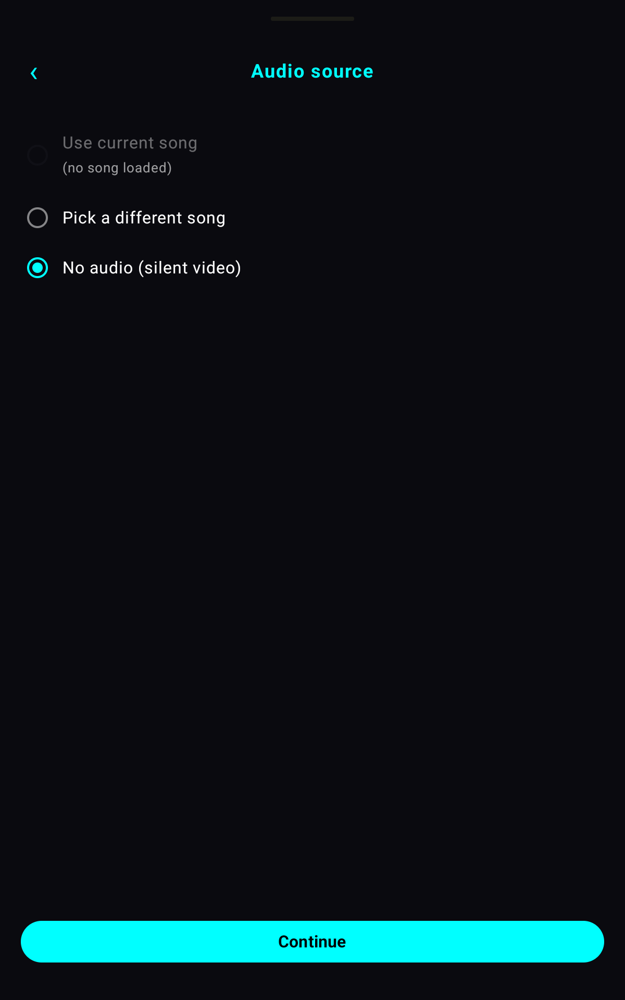
Use the loaded song, pick a different track, or export a silent video.
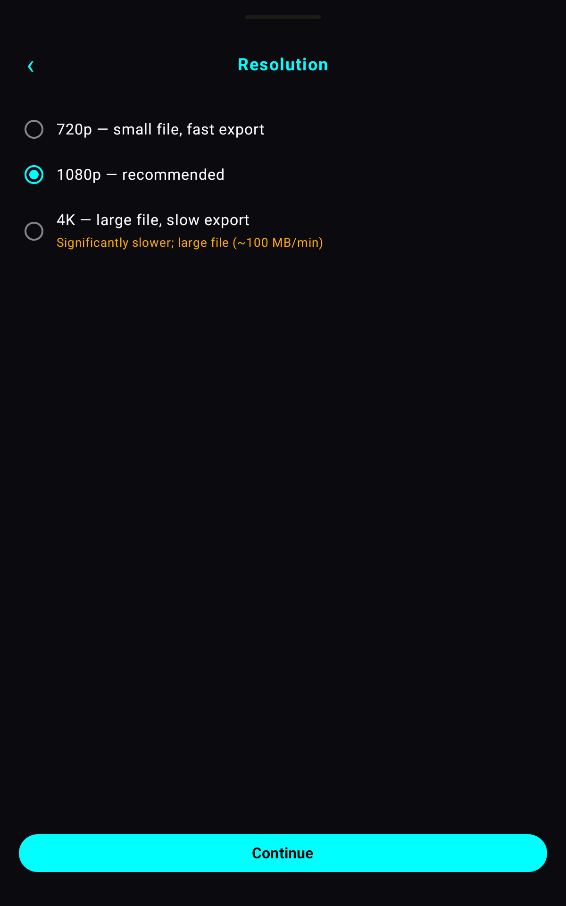
720p, 1080p, or 4K — each labeled with its file-size and speed trade-off.
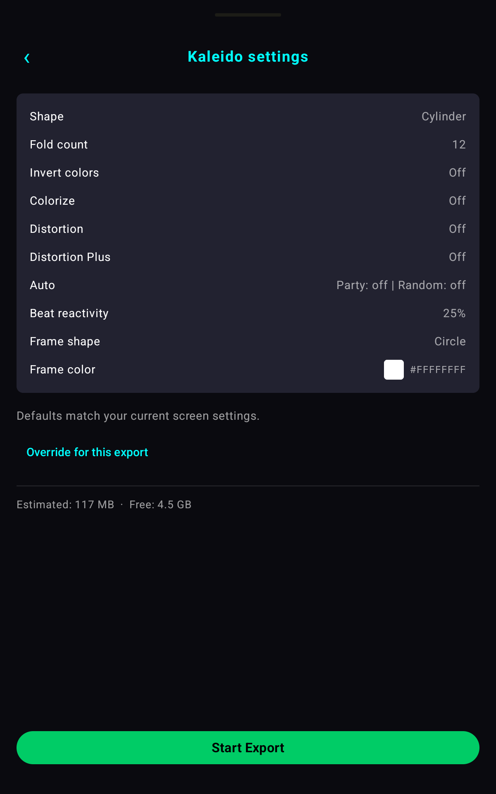
Confirm shape, fold count and frame, check the size estimate, then tap Start Export — it renders offline, muxes your audio, and lands in your Gallery.
| Resolution | Pixels | Bitrate | Best for |
|---|---|---|---|
| 720p | 1280 × 720 | 8 Mbps | Small file, fast export |
| 1080p recommended | 1920 × 1080 | 16 Mbps | The everyday default |
| 4K | 3840 × 2160 | 80 Mbps | Large file (~100 MB/min), max detail |
H.264 High profile · VBR, short I-frame interval · AAC 192 kbps · decodes AAC, MP3, WAV, FLAC.
Open Add a Skin and take a photo, pick one from your gallery, or capture a mosaic straight from the live visualizer — there's a Random Mosaic too. Each one becomes a full audio-reactive skin you can swipe to at any time: up to 10 custom skins per device, alongside the 5 built in.
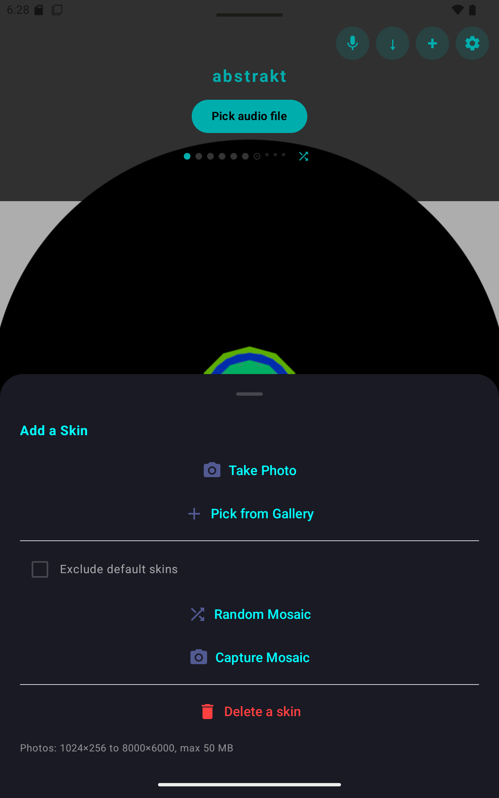
Real screens from real exports.
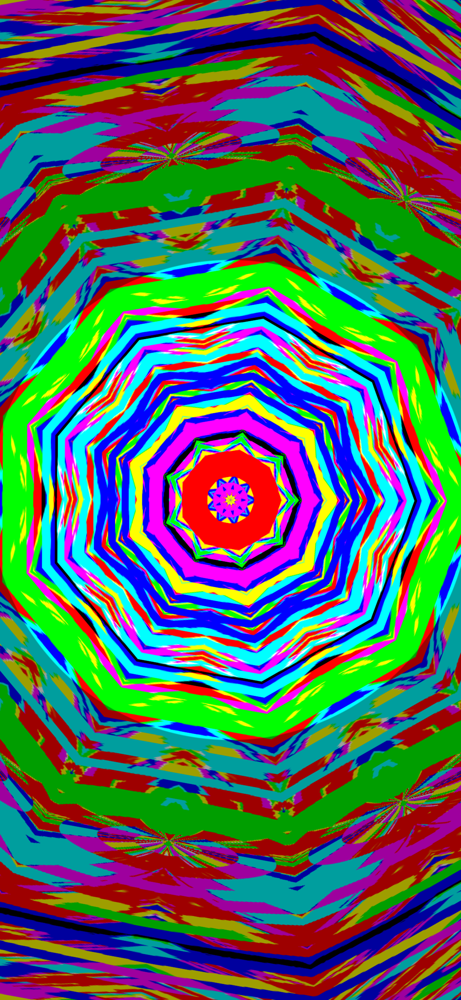
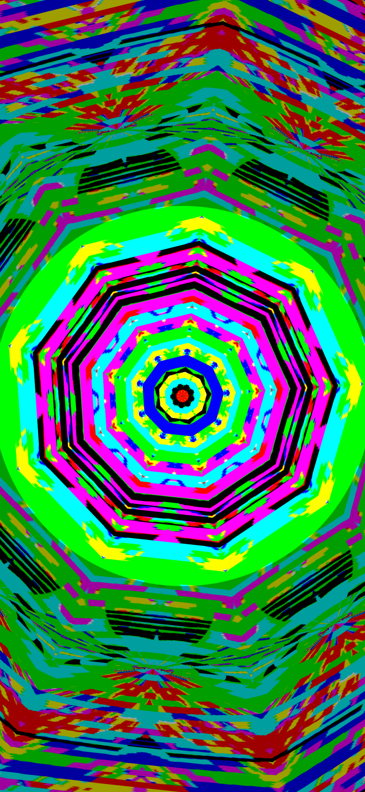
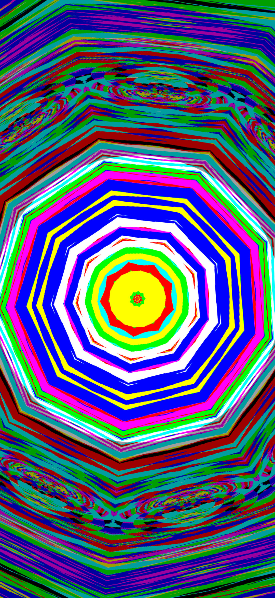
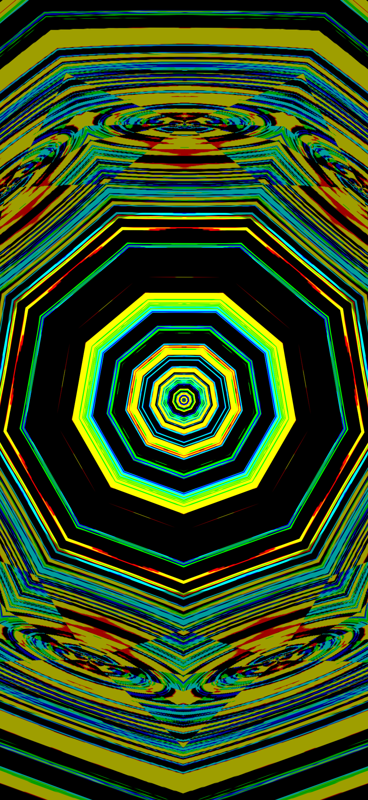
Built for Android 13+ — phones, tablets, and Chromebooks.
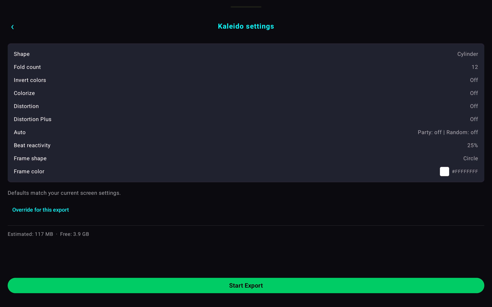
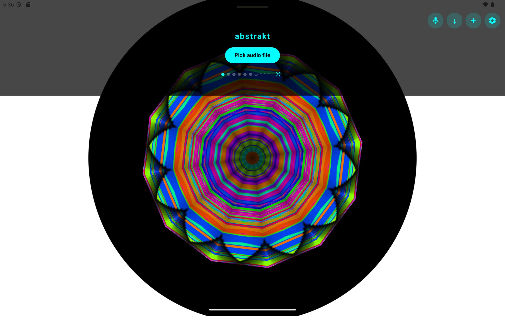
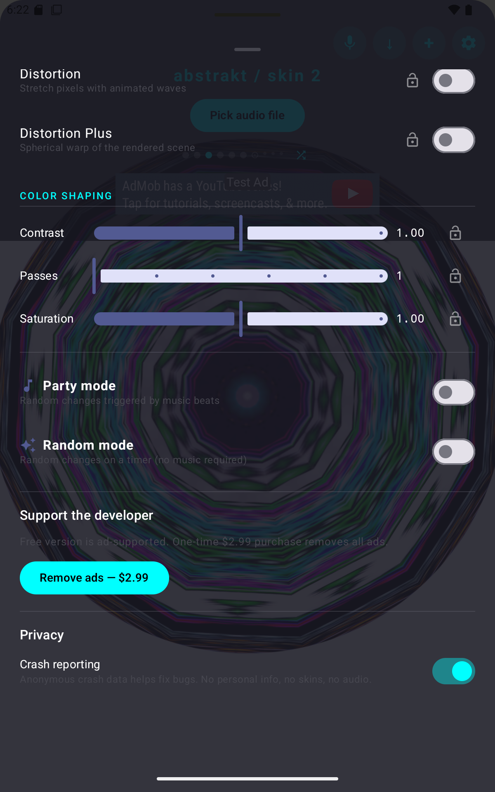
abstrakt engine is out now on Android — download it free, then go ad-free anytime with a one-time $2.99 unlock.
com.onojk.abstrakt